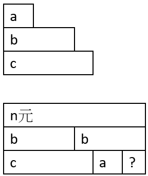
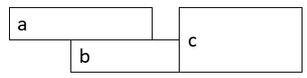
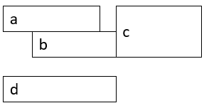
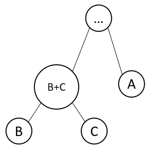
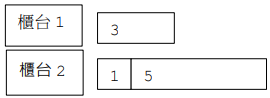
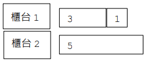
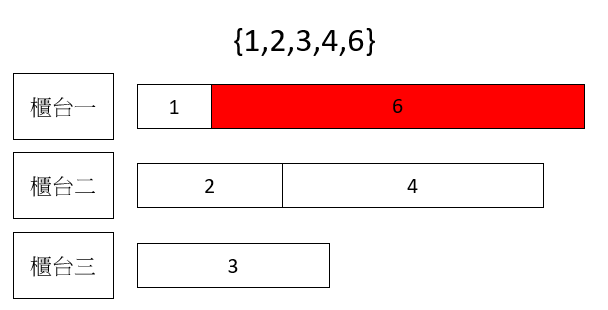

貪心演算法(Greedy)
貪心法按照最好情況選擇
反證法–流程(2024 IONC)
- 假設算法不一定找得到最佳解
- 考慮一個任意的反例
- 從該反例找到必然存在的矛盾
- 反駁假設「算法不一定找得到最佳解」
- 成功證明算法一定找得到最佳解
題型整理
P-4-1. 少林寺的代幣
題目：https://judge.tcirc.tw/ShowProblem?problemid=d042
令狐沖去少林寺觀光，少林寺有四種代幣，面額分別是
\[ 1, 5, 10, 50 \]
，令狐沖 拿了 n 元去換代幣，請問以這四種代幣湊成 n 元，最少要多少枚代幣？
Time limit: 1 秒
輸入格式：第一行是一個正整數 m，代表有幾筆測資，以下有 m 行，每行是一筆測資，每筆測資是一個正整數 n，n<1000。
輸出：依序每一行輸出每一筆測資的最少的代幣數量。
範例輸入： 3 21 50 123
範例結果： 3 1 7
說明：21 = 10*2 + 1, 50 = 50*1, 123 = 50*2 + 10*2 + 1*3。
對於這種換錢問題，想要證明使用較小代幣換錢是最好的方法，其實有一個公式：假設 \(v\) 為遞增序列，若滿足 \(v[i-1] \times 2 \leq v[i]\) ，以較大面額的代幣先換就能夠換到最少代幣。
該如何證明？
假設 \(v[n]\) 為每種代幣（由小到大），\(v[i-1] \times 2 \leq v[i]\) 。
假設有 \(a, b, c\)（\(a < b < c\)，且 \(2b > c\)），\(b\) 就是上面的 \(v[i-1]\)，
\(c\) 就是上面的 \(v[i]\)。假設有 \(x\) 元，\(x = 2b\)，使用兩個硬幣。
因為 \(2b > c\)，所以如果使用 \(c\) 的話，第二個硬幣一定不是 \(b\)，
又因剩餘的比 \(b\) 小，會使用到 \(a\) 或是比 \(a\) 小的硬幣，
總使用硬幣數量一定會大於等於兩枚硬幣。
因此可知，在金額為 \(2b\) 的情況下，使用一枚 \(c\) 再搭配較小面額的硬幣，並不會比直接使用兩枚 \(b\) 來得更省硬幣數。換言之，兩枚 \(b\) 在硬幣數量上至少與一枚 \(c\) 一樣好，甚至更好。
而這正是條件 \(2b>c\)（亦即 \(v[i]\le 2v[i-1]\)）的意義所在：
它確保了「大面額 \(c\) 並沒有強到可以完全取代兩枚上一個面額 \(b\)」，因此在最佳解中，我們不會因為使用 \(c\) 而減少所需的硬幣數。
也就是說，只要存在兩枚 \(b\) 的情況，就不需要考慮改用一枚 \(c\) 來取代，因為這樣做不但沒有好處，反而可能增加硬幣數。由此可知，在換錢時，優先使用較小面額（或至少不急著使用較大面額）是合理且安全的選擇。

#include <bits/stdc++.h>
using namespace std;
#define nn "\n";
int main(){
ios::sync_with_stdio(0),cin.tie(0);
int n;
cin>>n;
int v[]={50,10,5,1};
while(n--){
int x,ans=0;
cin>>x;
for(int i:v){
ans+=x/i;//算有幾個硬幣
x%=i;//取餘數
}
cout<<ans<<nn;
}
}
P-4-2. 笑傲江湖之三戰
題目：https://judge.tcirc.tw/ShowProblem?problemid=d043
笑傲江湖的遊戲中，你扮演令狐沖的角色，因為「長恨此身非我有，何時忘卻盈盈」， 所以你率領任我行等魔教高手前往少林寺搭救任盈盈，欲知故事原委可參見笑傲江湖 第 27 回「三戰」。套句丸尾班長的口頭禪，總而言之，少林寺與五嶽劍派等正教派 出 n 位高手，而你方也有 n 位高手，每個人都有一個戰力值。雙方要進行一對一的對 戰，每個人不管輸或贏都只能比一場，假設兩人對戰時，戰力值高的獲勝。對於對方 的每一位高手，你可以指定派哪一位與其對戰，為了解救盈盈，你希望贏越多場越好， 平手則沒有幫助。請計算出最多能贏多少場。
Time limit: 1 秒
輸入格式：第一行是一個正整數 n，第二行有 n 個非負整數是對方的戰力，第三行有 n 個非負整數是我方的戰力，同行數字間以空白間格。n 與戰力值不超過 1e5。
輸出：輸出最多可能的勝場數。
範例輸入：
5
3 1 7 0 2
8 3 5 0 0
範例結果：
3
直覺想法：
・如果我們想增加勝場，就希望我方用「能贏」的戰力去打對方最弱的對手；
・用太強的打太弱會浪費實力 → 可能讓更難贏的場次變得更難贏，
・用太弱去打太強又肯定輸。
所以策略是：
- 把對方的戰力排序升序
- 把我方的戰力排序升序
- 用我方最小能贏的去打對方最小的能被贏的
假設我方：3,5
對方：1,4
如果3選1，5選4 -> 贏兩局
但如果3選4，5選1 -> 只贏一局
#include <bits/stdc++.h>
using namespace std;
#define nn "\n";
#define N 100000;
int main(){
ios::sync_with_stdio(0),cin.tie(0);
int n;
cin>>n;
int v1[100000];
int v2[100000];
for(int i=0;i<n;i++){
cin>>v1[i];//分別存入
}
for(int i=0;i<n;i++){
cin>>v2[i];//分別存入
}
sort(v1,v1+n);//排序
sort(v2,v2+n);//排序
int index1=0,ans=0;
for(int i=0;i<n;i++){
if(v1[index1]<v2[i]){
ans++;
index1++;
}
}
cout<<ans;
}
既然要排序，有人會問能不能用set?，當然可以!!只是戰力數值有可能重複，需要用
multiset，速度也會比較慢，以下是程式碼
#include <bits/stdc++.h>
using namespace std;
#define nn "\n";
int main(){
ios::sync_with_stdio(0),cin.tie(0);
long long n,x;
cin>>n;
multiset<int>s1;
multiset<int>s2;
for(long long i=0;i<n;i++){
long long x;
cin>>x;
s1.insert(x);
}
for(long long i=0;i<n;i++){
long long x;
cin>>x;
s2.insert(x);
}
auto it=s1.begin();
long long ans=0;
for(long long i:s2){
if(*it<i){
ans++;
it++;
}
}
cout<<ans;
return 0;
}
P-4-3. 十年磨一劍(最少完成時間)
題目：https://judge.tcirc.tw/ShowProblem?problemid=d044
人們常用說「十年磨一劍」來比喻下的功夫深，但是這句話對於華山磨劍坊就不適用 了，因為要磨劍的客人非常的多，一把劍如果磨太久，客人等待的時間過長是會被客訴的。華山磨劍坊目前有 n 筆訂單，每筆訂單要磨一把劍，每把劍所需的時間不盡相同。磨劍師傅每次只能磨一把劍，現在希望每一筆訂單的完成時間之總和能夠最小， 希望能找出最好的磨劍順序。舉例來說，如果有四把劍，磨劍需要的時間分別是 (3,1,3,4)，如果以(3,1,3,4)的順序來磨，第一把的完成時間是 3，第二把完成 時間是 3+1=4，第三把是 3+1+3=7，第四把是 3+1+3+4=11，總和是 3+4+7+11=25。 如果把順序改成(1,3,3,4)，那麼完成時間分別是(1,4,7,11)，總和是 23，這是 這一題最好的解。
Time limit: 1 秒
輸入格式：第一行是一個正整數 n，第二行有 n 個正整數是每一把劍需要的時間，同行數字間以空白間格。n 與每把劍的時間都不超過 1e5。
輸出：輸出最小的完成時間總和。
範例輸入：
4
3 1 3 4
範例結果：
23
假設有兩種工作的排列方式（只考慮相鄰的兩個工作 a、b）：
令 S 表示：在 a 和 b 之前，所有已排工作的「處理時間總和」（也就是累積已花時間）。
方式 A：a 在前面，b 在後面
a的完成時間：S + ab的完成時間：S + a + b
因此（只看這兩個工作的）完成時間總和為：
\[ (S+a) + (S+a+b) = 2S + 2a + b \]
方式 B：b 在前面，a 在後面
b的完成時間：S + ba的完成時間：S + b + a
因此完成時間總和為：
\[ (S+b) + (S+b+a) = 2S + 2b + a \]
若希望方式 A 的總和小於方式 B：
\[ 2S + 2a + b < 2S + 2b + a \]
兩邊同時減去 2S：
\[ 2a + b < 2b + a \]
整理得到：
\[ a < b \]
結論
"若希望方式 A 的總和小於方式 B "，就要" \(a < b\) "
應該把 a 排在 b 前面，才能使完成時間總和較小。
因此，整體最佳策略是：將工作時間較小的排在前面（由小到大排序）。
#include <bits/stdc++.h>
using namespace std;
#define nn "\n"
#define N 100000
int main(){
ios::sync_with_stdio(0),cin.tie(0);
long long n;
cin>>n;
long long v[N];
long long ans=0;
for(long long i=0;i<n;i++){
cin>>v[i];
}
sort(v,v+n);
long long i=0;
while(n){
ans+=v[i]*n;
i++;//index增加
n--;//倍數減少
}
cout<<ans;
}
P-4-4. 幾場華山論劍(activity selection)
題目：https://judge.tcirc.tw/ShowProblem?problemid=d045
自從華山論劍聲名大噪之後，想參加的人絡繹不絕，因此華山派決定每年都舉辦非常 多場的華山論劍，每一場都有自己的開始時間與結束時間，參加者必須全程在場，所 以不能在同一時間參加兩場。令狐沖拿到了今年所有場次的資料，希望能參加越多場 越好，以便盡速累積經驗值，請你幫忙計算最多可以參加幾場。請注意，所挑選活動 必須完全不重疊，兩場活動只在端點重疊也是不可以同時參加的，也就是說前一場的 結束時間必須小於下一場的開始時間。
Time limit: 1 秒
輸入格式：第一行是一個正整數 n，代表一共舉辦了 n 場華山論劍，接下來 n 行，每 行兩個非負整數 s 與 t，代表這場活動的時間區間是
\[ s,t \]
，兩數字間以空白間格。 n 不超過 1e5，s < t < 1e9。 輸出：最多參加幾場活動。
範例輸入：
4
1 4
0 3
3 4
4 6
範例結果：
2
說明：可以挑選
\[ 0,3 \]
與
\[ 4,6 \]
兩場活動。
我們要如何做這題呢？
現在我們的目的是希望找出一個最佳解，而實際上有可能不只一個最佳解。我們可以先找出結束時間最早的，他一定是其中一組最佳解的第一個，
因為第一個活動的開始時間其實並不需要管，
找出最早結束時間後我們得到了第一個最佳解或是可以看到圖

a和b都為最佳解，為了讓之後的活動有更好的選擇，我們使用結束時間較早的a
換句話說，我們確保了「在a結束的時間點」，我們完成了一個活動
接下來我們把a當作起點，我們要繼續挑選第二個活動，
第二個活動的開始時間我們還不能確定開始的限制在哪假如第二個的開始時間小於a的開始時間(如下圖的b)，
就意味著我們一開始選的a會被丟掉，這種情況如同我們選了下圖的d，
會使我們的結束時間更晚，而且也是完成一個活動，並沒有比只選a還要好，
我們不如直接選擇a
而且如果c的時間早了一點，我們甚至沒辦法在c之前完成任何活動

由此可知我們在選完第一個之後，選第二個有以下條件：
- 開始時間大於前一個的結束時間
- 結束時間較早的(讓之後的活動有更好的選擇)
所以我們可以根據結束時間排序，遇到「開始時間小餘前者結束時間」的活動，我們直接省略即可。
為了排序，使用了
struct創造兩個欄位再搭配cmp
#include <bits/stdc++.h>
using namespace std;
#define nn "\n"
#define N 100000
struct st{
int x;
int y;
};
bool cmp(st a,st b){
return a.y<b.y;
}
int main(){
ios::sync_with_stdio(0),cin.tie(0);
int n;
cin>>n;
st v[N];
for(int i=0;i<n;i++){
cin>>v[i].x>>v[i].y;
}
sort(v,v+n,cmp);
int ans=0;
int r=-1;
for(int i=0;i<n;i++){
if(v[i].x>r){
r=v[i].y;
ans++;
}
}
cout<<ans;
}
P-4-5. 嵩山磨劍坊的問題(加權最小完成時間)
題目：https://judge.tcirc.tw/ShowProblem?problemid=d046
嵩山磨劍坊接了 \(n\) 筆磨劍工作，磨劍師傅每次只能磨一把劍。除了每把劍各有所需的時間之外，每件工作的重要性也不同。假設第 \(i\) 筆訂單需要的時間是 \(t[i]\)，而重要性是 \(w[i]\)。磨劍坊的計價方式是：每件工作都已經先收了一筆款項，假設第 \(i\) 筆訂單在時間 \(f\) 時完成，則需要扣款 \(f \times w[i]\)。現在希望將 \(n\) 筆磨劍工作安排最好的順序，使得扣款總額越小越好。嵩山派掌門左冷禪是非常嚴厲的老闆，希望你能幫磨劍師傅找出最好的順序以免他遭到處罰。
舉例來說，如果有四把劍，磨劍需要的時間分別是 \(t = (1, 4, 5, 6)\)，而重要性依序是 \(w = (1, 3, 4, 7)\)。如果依訂單編號順序 \( (1, 2, 3, 4)\) 來磨，也剛好是工作時間由短到長的順序，每件工作的完成時間依序是 \( (1, 5, 10, 16)\)，扣款總額是：
\[ 1 \times 1 + 5 \times 3 + 10 \times 4 + 16 \times 7 = 168 \]
如果依照訂單編號順序 \( (4, 1, 3, 2)\) 來磨，則 \(t\) 與 \(w\) 重新排列後分別是 \( t = (6, 1, 5, 4)\)，\(w = (7, 1, 4, 3)\)。完工時間是 \( (6, 7, 12, 16)\)，扣款總額是：
\[ 6 \times 7 + 7 \times 1 + 12 \times 4 + 16 \times 3 = 145 \]
這是這一題 \(24\) 種排列中最好的解。
Time limit: 1 秒
輸入格式：輸入的第一行工作數 N，N<1e5。第二行有 N 個正整數，依序是各訂單所 需時間 t
\[ 1 \]
、t
\[ 2 \]
、…、t
\[ N \]
。第三行有 N 個非負整數，依序是各訂單的重要性 w
\[ 1 \]
、w
\[ 2 \]
、…、w
\[ N \]
，時間與重要性皆不超過 1000，相鄰以空白間隔。
輸出：輸出最小的扣款總額。答案不超過 1e18。
範例輸入：
4
1 4 5 6
1 3 4 7
範例結果：
145
假設只考慮相鄰的兩個工作 \(a\)、\(b\)：
- 工作 \(a\) 的處理時間為 \(t_a\)，重要性（權重）為 \(w_a\)
- 工作 \(b\) 的處理時間為 \(t_b\)，重要性（權重）為 \(w_b\)
令 \(S\) 表示：在 \(a\) 和 \(b\) 之前，所有已排工作的「處理時間總和」（也就是目前累積時間）。
題目總扣款為 \(\sum f_i \cdot w_i\)，其中 \(f_i\) 是該工作的完成時間。
方式 A：先做 \(a\) 再做 \(b\)
- \(a\) 的完成時間為 \(S+t_a\)，扣款為 \((S+t_a)w_a\)
- \(b\) 的完成時間為 \(S+t_a+t_b\)，扣款為 \((S+t_a+t_b)w_b\)
因此這兩個工作的扣款總和為：
\[ C_A=(S+t_a)w_a+(S+t_a+t_b)w_b \]
方式 B：先做 \(b\) 再做 \(a\)
- \(b\) 的完成時間為 \(S+t_b\)，扣款為 \((S+t_b)w_b\)
- \(a\) 的完成時間為 \(S+t_b+t_a\)，扣款為 \((S+t_b+t_a)w_a\)
因此這兩個工作的扣款總和為：
\[ C_B=(S+t_b)w_b+(S+t_b+t_a)w_a \]
比較 A 與 B 哪個較好（推導排序規則）
若希望方式 A 不比方式 B 差（A 較好或一樣好），則
\[ C_A \le C_B \]
也就是
\[ (S+t_a)w_a+(S+t_a+t_b)w_b \le (S+t_b)w_b+(S+t_b+t_a)w_a \]
展開並化簡（把過程寫完整）
左邊展開：
\[
\begin{aligned}
(S+t_a)w_a+(S+t_a+t_b)w_b
&= Sw_a+t_aw_a+(S+t_a+t_b)w_b \\
&= Sw_a+t_aw_a+Sw_b+t_aw_b+t_bw_b \\
&= S(w_a+w_b)+t_aw_a+t_aw_b+t_bw_b
\end{aligned}
\]
右邊展開：
\[
\begin{aligned}
(S+t_b)w_b+(S+t_b+t_a)w_a
&= Sw_b+t_bw_b+(S+t_b+t_a)w_a \\
&= Sw_b+t_bw_b+Sw_a+t_bw_a+t_aw_a \\
&= S(w_a+w_b)+t_bw_b+t_bw_a+t_aw_a
\end{aligned}
\]
代回不等式：
\[ S(w_a+w_b)+t_aw_a+t_aw_b+t_bw_b \le S(w_a+w_b)+t_bw_b+t_bw_a+t_aw_a \]
兩邊同時減去相同的 \(S(w_a+w_b)\)：
\[ t_aw_a+t_aw_b+t_bw_b \le t_bw_b+t_bw_a+t_aw_a \]
兩邊同時減去相同的 \(t_aw_a\)：
\[ t_aw_b+t_bw_b \le t_bw_b+t_bw_a \]
兩邊同時減去相同的 \(t_bw_b\)：
\[ t_aw_b \le t_bw_a \]
因此得到排序判斷條件：
\[ t_a w_b \le t_b w_a \]
結論（排序方式）
為了讓總扣款 \(\sum f_i w_i\) 最小：
任意相鄰兩個工作 \(a,b\) 的相對順序應滿足 \(t_a w_b \le t_b w_a\)）
#include <bits/stdc++.h>
using namespace std;
#define nn "\n"
#define N 100000
struct st{
long long x;
long long y;
};
bool cmp(st a,st b){
return a.x*b.y<b.x*a.y;
}
int main(){
ios::sync_with_stdio(0),cin.tie(0);
long long n;
cin>>n;
st v[N];
for(long long i=0;i<n;i++){
cin>>v[i].x;
}
for(long long i=0;i<n;i++){
cin>>v[i].y;
}
sort(v,v+n,cmp);
long long prev=0;//存上一個
ans=0;
for(long long i=0;i<n;i++){
prev+=v[i].x;
ans+=prev*v[i].y;
}
cout<<ans;
}
Q-4-6. 少林寺的自動寄物櫃(APCS201710)
題目：https://judge.tcirc.tw/ShowProblem?problemid=d047
少林寺的自動寄物櫃系統存放物品時，是將 N 個物品堆在一個垂直的貨架上，每個物 品各佔一層。系統運作的方式如下：每次只會取用一個物品，取用時必須先將在其上 方的物品貨架升高，取用後必須將該物品放回，然後將剛才升起的貨架降回原始位置， 之後才會進行下一個物品的取用。
每一次升高貨架所需要消耗的能量是以這些物品的總重來計算。現在有 N 個物品，第 i 個物品的重量是 w(i)而需要取用的次數為 f(i)，我們需要決定如何擺放這些物 品的順序來讓消耗的能量越小越好。
舉例來說，有兩個物品 w(1)=1、w(2)=2、f(1)=3、f(2)=4，也就是說物品 1 的 重量是 1 需取用 3 次，物品 2 的重量是 2 需取用 4 次。我們有兩個可能的擺放順序 (由上而下)：
-
(1,2)，也就是物品 1 放在上方，2 在下方。那麼，取用 1 的時候不需要能量， 而每次取用 2 的能量消耗是 w(1)=1，因為 2 需取用 f(2)=4 次，所以消耗能 量數為 w(1)*f(2)=4。
-
(2,1)。取用 2 的時候不需要能量，而每次取用 1 的能量消耗是 w(2)=2，因為 1 需取用 f(1)=3 次，所以消耗能量數=w(2)*f(1)=6。
在所有可能的兩種擺放順序中，最少的能量是 4，所以答案是 4。再舉一例，若有三 物品而 w(1)=3、w(2)=4、w(3)=5、f(1)=1、f(2)=2、f(3)=3。假設由上而下 以(3,2,1)的順序，此時能量計算方式如下：取用物品 3 不需要能量，取用物品 2 消 耗 w(3)*f(2)=10，取用物品 1 消耗(w(3)+w(2))*f(1)=9，總計能量為 19。如 果以(1,2,3)的順序，則消耗能量為 3*2+(3+4)*3=27。事實上，我們一共有 3!=6 種可能的擺放順序，其中順序(3,2,1)可以得到最小消耗能量 19。
Time limit: 1 秒
輸入格式：輸入的第一行是物品件數 N，N<1e5。第二行有 N 個正整數，依序是各物 品的重量 w(1)、w(2)、…、w(N)。第三行有 N 個正整數，依序是各物品的取用次數 f(1)、f(2)、…、f(N)，重量與次數皆不超過 1000，相鄰以空白間隔。
輸出：輸出最小能量消耗值。答案不超過 1e18。
範例輸入：
3
3 4 5
1 2 3
範例結果：
19
假設只考慮相鄰的兩個物品 \(a\)、\(b\)（由上而下排列）：
- 相鄰兩個物品：\(a\)、\(b\)
- 重量：\(w_a, w_b\)
- 取用次數：\(f_a, f_b\)
- 令 \(S\) 表示：在 \(a\)、\(b\) 上方所有物品的「總重量」（prefix weight sum）
題意是：取用某一層時，要把它上方所有物品升高，消耗能量 =「上方重量總和」；因此每一層的能量 =（上方重量總和）\(\times\)（該層取用次數）。
情況 1：\(a\) 在 \(b\) 上面（順序：\(S \rightarrow a \rightarrow b\)）
| 層數 | 重量 | 次數 |
|---|---|---|
| 上方（已固定） | \(S\) | — |
| 中間（要比較） | \(w_a\) | \(f_a\) |
| 下方（要比較） | \(w_b\) | \(f_b\) |
對應的能量消耗（逐層看「上方重量」）：
| 層數 | 上方重量總和 | 本層消耗能量 |
|---|---|---|
| \(a\) | \(S\) | \(S\cdot f_a\) |
| \(b\) | \(S+w_a\) | \((S+w_a)\cdot f_b\) |
因此這兩層在此順序下的總消耗能量為
\[
\begin{aligned}
C_A
&= S f_a + (S+w_a)f_b \\
&= S(f_a+f_b) + w_a f_b
\end{aligned}
\]
情況 2：\(b\) 在 \(a\) 上面（順序：\(S \rightarrow b \rightarrow a\)）
| 層數 | 重量 | 次數 |
|---|---|---|
| 上方（已固定） | \(S\) | — |
| 中間（要比較） | \(w_b\) | \(f_b\) |
| 下方（要比較） | \(w_a\) | \(f_a\) |
能量消耗表：
| 層數 | 上方重量總和 | 本層消耗能量 |
|---|---|---|
| \(b\) | \(S\) | \(S\cdot f_b\) |
| \(a\) | \(S+w_b\) | \((S+w_b)\cdot f_a\) |
因此這兩層在此順序下的總消耗能量為
\[
\begin{aligned}
C_B
&= S f_b + (S+w_b)f_a \\
&= S(f_a+f_b) + w_b f_a
\end{aligned}
\]
比較兩種順序（推出排序規則）
把兩個總能量展開後可看出，兩邊都有相同的 \(S(f_a+f_b)\)，因此比較時只需要看剩下的部分：
\[
\begin{aligned}
C_A \le C_B
&\;\Rightarrow\; S(f_a+f_b) + w_a f_b \le S(f_a+f_b) + w_b f_a \\
&\;\Rightarrow\; w_a f_b \le w_b f_a
\end{aligned}
\]
結論（排序方式）
若要讓總能量最小，當 \(a\) 與 \(b\) 相鄰時，應讓它們的上下順序滿足
\[ w_a f_b \le w_b f_a \]
#include <bits/stdc++.h>
using namespace std;
#define nn "\n"
#define N 100000
struct st{
long long x;
long long y;
};
bool cmp(st a,st b){
return a.y*b.x>b.y*a.x;
}
int main(){
ios::sync_with_stdio(0),cin.tie(0);
long long n;
cin>>n;
st v[N];
for(long long i=0;i<n;i++){
cin>>v[i].x;
}
for(long long i=0;i<n;i++){
cin>>v[i].y;
}
sort(v,v+n,cmp);
long long weight=0,ans=0;
for(long long i=1;i<n;i++){
weight+=v[i-1].x; //重量逐層增加
ans+=v[i].y*weight; //計算消耗
}
cout<<ans;
}
P-4-7. 岳不群的併派問題(Two-way merge) (*)
題目：https://judge.tcirc.tw/ShowProblem?problemid=d048
江湖上門派林立，華山派掌門岳不群認為要消除門派的衝突就是要合併各門派，但不能操之過急，必須每次挑兩個門派合併，如此逐步合併，最後將所有門派合併成一派。合併門派需要一些成本，每個門派都有他的成員數，第 i 個門派的成員數是 m(i)， 合併兩派的成本就是雙方成員數之和，而兩派合併後，雙方成員就會歸到新合併的門 派。岳不群不希望耗費太多成本，輸入各派人數，請幫他計算最少的合併總成本。
舉例來說，一開始如果有三派，m=(3, 5, 1)，若 3 人與 5 人的兩派先合併，成本 是 3+5=8，合併後剩下兩派，人數是(8,1)，再合併這兩派，成本是 8+1=9，此時 已經只剩下一派，也就是完成所有合併統一江湖了，總成本是 8+9=17。如果我們更 換合併的順序，先合併 3 人與 1 人的兩派(成本 4)，再合併剩下的 5 人(成本 4+5=9)， 則總成本只有 4+9=13。這是這個例子的最低成本。
Time limit: 1 秒
輸入格式：第一行是一個正整數 n，代表初始的門派數量，第二行有 n 個正整數是每派的成員數，同行數字間以空白間格。n 不超過 2e5，每個門派初始人數都不超過 1e5。
輸出：第一行輸出總人數，第二行輸出最小的合併總成本。
範例輸入：
3
3 5 1
範例結果：
9
13
根據題目我們可以將合併的過程畫成樹狀圖

知道合併的規則後，我們要開始討論「先合併誰、後合併誰」才會讓總成本最小。
根據題目，我們可以把合併過程畫成樹狀圖：
每個內部節點代表一次合併，而該次合併的成本就是兩個子節點數值的和。
例如圖中先把 \(b\) 與 \(c\) 合併成 \(b+c\)，再把 \((b+c)\) 與 \(a\) 合併，並一路往上合併到根節點。
方法 A（樹上先形成節點 \(b+c\)，再與 \(a\) 合併）
依照圖的做法：
- 先合併 \(b\) 與 \(c\)，成本是 \(b+c\)
- 再合併 \((b+c)\) 與 \(a\)，成本是 \((b+c)+a\)
所以方法 A 的總成本為
\[ (b+c) + \bigl((b+c)+a\bigr) \]
方法 B（樹上先形成節點 \(a+c\)，再與 \(b\) 合併）
改成另一種樹的安排：
- 先合併 \(a\) 與 \(c\)，成本是 \(a+c\)
- 再合併 \((a+c)\) 與 \(b\)，成本是 \((a+c)+b\)
所以方法 B 的總成本為
\[ (a+c) + \bigl((a+c)+b\bigr) \]
比較方法 A 與方法 B（推出規則）
若希望方法 A 的總成本小於等於方法 B，則
\[ (b+c) + \bigl((b+c)+a\bigr) \le (a+c) + \bigl((a+c)+b\bigr) \]
把左右展開：
\[ b+c+b+c+a \le a+c+a+c+b \]
把兩邊共同的 \(b\) 與兩個 \(c\) 消掉：
\[ a+b \le 2a \]
整理得到
\[ b \le a \]
結論（合併策略）
要讓總成本最小，就應該每一步都先合併目前最小的兩個門派。
也就是要讓 \(b\) 比 \(a\) 小(樹狀圖下面的比較小)。
這題需要一直排序，而且要容許多個元素
所以可以使用的資料結構有：
1. multiset
2. priority_queue
3. 陣列不停排序
下面我們使用priority_queue
加入新元素(push)，O(log(n))。
查詢最大值(top)，O(1)。
刪除最大值(pop)，O(log(n))。
檢查是否為空(empty)，O(1)。
#include<bits/stdc++.h>
using namespace std;
int main(){
ios::sync_with_stdio(0),cin.tie(0);
long long n,x;
cin>>n;
long long total=0;
priority_queue<long long>pq;
for(long long i=0;i<n;i++){
cin>>x;
pq.push(-x);
total+=x;
}
long long ans=0;
while(pq.size()>1){
long long y=pq.top();
pq.pop();
y+=pq.top();
pq.pop();
ans+=y;
pq.push(y);
}
cout<<total<<"\n"<<-ans;
}
Q-4-8. 先到先服務 (*)
題目：https://judge.tcirc.tw/ShowProblem?problemid=d053
有 n 個客人要分配到 m 個櫃台來服務，客人依編號順序到達，第 i 個客人需要 t(i) 的時間來完成(無論分配到哪一個櫃台)，而且每個客人的需求必須在同一個櫃台完 成。因為公平的因素，先到客人不可以比晚到客人更晚開始服務。現在希望安排每個 客人的服務櫃檯，以便可以在最短的時間內完成所有客人的需求。舉例來說，如果有三位客人與兩個櫃台，需求的時間依序是(3,1,5)，我們可以如下 圖分配，最後的完成時間是 6。

請注意，我們不可以如下分配，雖然這樣的完成時間會減少到 5，但是第 3 個客人比 第 2 個客人早開始服務違反了先到先服務的原則。

Time limit: 1 秒
輸入格式：輸入兩行，第一行是正整數 n 與 m，第二行是 n 個正整數 t(1), t(2),…,t(n)，同行數字間以空白間格。n 與 m 不超過 2e5，t(i)不超過 1e4。
輸出：最早可能服務完所有客人的時間。
範例輸入：
3 2
3 1 5
範例結果：
6
這題思考遺下就會發現，如果第i個不是在數字最少的櫃台，之後就沒有人可以去最少 的，
因為不能比第i個早開始。
可以看到圖：

這題需要一直排序，而且只需要使用到最小值，有沒有想到誰呢？
那就是priority_queue啦~
記得要存為負數得到最小值
#include<bits/stdc++.h>
using namespace std;
#define nn "\n"
#define N 200000
int main(){
ios::sync_with_stdio(0),cin.tie(0);
int n,m,mi=INT_MAX;
cin>>n>>m;
priority_queue<int>pq;
for(int i=0;i<m;i++){
int x;
cin>>x;
pq.push(-x);
}
for(int i=0;i<n-m;i++){
int y;
cin>>y;
y=pq.top()-y;
pq.pop();
pq.push(y);
mi=min(mi,y);
}
cout<<-mi;
}
P-4-9. 基地台 (APCS201703)
題目：https://judge.tcirc.tw/ShowProblem?problemid=d049
直線上有 N 個要服務的點，每架設一座基地台可以涵蓋直徑 R 範圍以內的服務點。輸 入服務點的座標位置以及一個正整數 K，請問：在架設 K 座基地台以及每個基地台的 直徑皆相同的條件下，基地台最小直徑 R 為多少？
Time limit: 1 秒
輸入格式：輸入有兩行。第一行是兩個正整數 N 與 K，以一個空白間格。第二行 N 個 非負整數 P
\[ 0 \]
，P
\[ 1 \]
，….，P
\[ N-1 \]
表示服務點的點座標，相鄰數字以空白間隔。 座標範圍不超過 1e9，1≤ K < N ≤ 5e4。
輸出：最小的基地台直徑。
範例輸入：
6 2
5 2 1 7 5 8
範例結果：
3
這題結合了跳躍二分搜
可以發現，基地台直徑越大，
越能夠包含全部這就符合跳躍二分搜的特性了
可以依照半徑由小到大分成兩半
分成「無法包含全部」、「可以包含全部」
我們找到「無法包含」的最後一個長度
，再加一就是「可以包含的最小長度了要如何寫跳躍二分搜呢？
我們要確定想要跳躍的是什麼
可以是長度，或是index
在這邊我們要跳躍的是直徑接下來我們要確認最大值，
最大的可能就是一次覆蓋全部，
也就是最大座標減去最小座標確定要跳躍什麼、最大值之後基本上就沒什麼問題了
在函式的部分可以使用貪婪演算法，可以參考
P-4-4. 幾場華山論劍
設定一個變數為覆蓋最尾端，
若下一個座標大於覆蓋最尾端，就以下一個座標為起點加上直徑更新最尾端
#include <bits/stdc++.h>
using namespace std;
int n,k;
int v[100000];
bool a(int ij){
int time=k;int lend=-1;
for(int i=0;i<n;i++){
if(v[i]>lend){
if(time==0)return false;
lend=v[i]+ij;
time--;
}
}
return true;
}
int main(){
ios::sync_with_stdio(0),cin.tie(0);
cin>>n>>k;
for(int i=0;i<n;i++){
cin>>v[i];
}
sort(v,v+n);
int index=0,l=v[n-1]-v[0];
for(int j=l/2;j;j/=2){
while(j+index<l && !a(j+index)){
index+=j;
}
}
cout<<index+1;
}